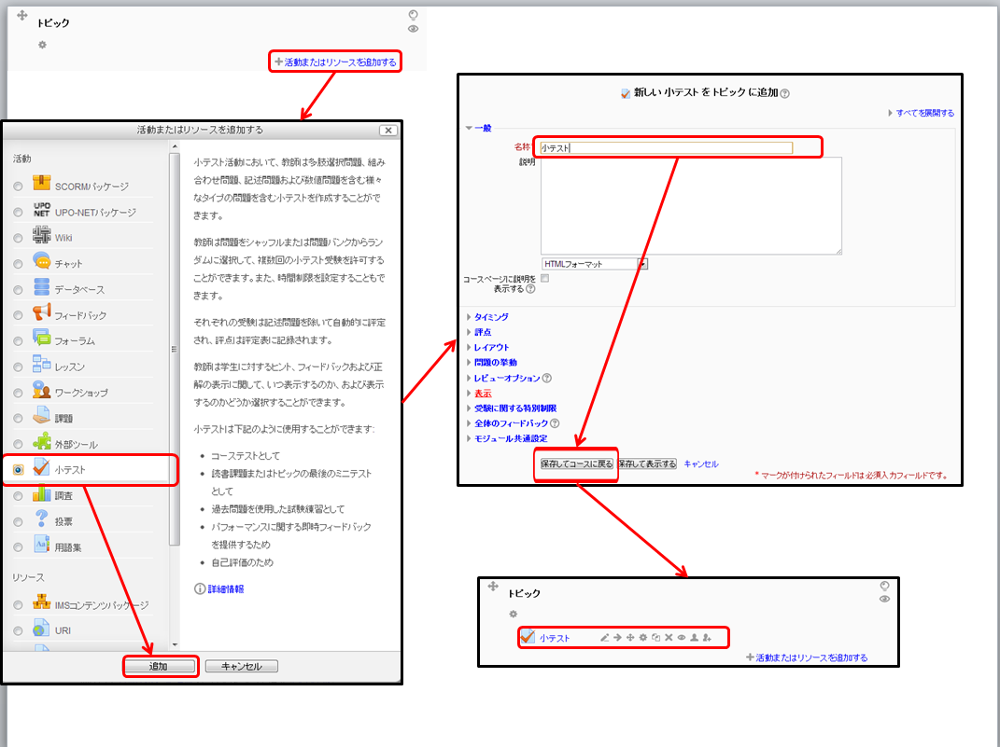

小テストの実施について
Moodleではオンラインで小テストを実施することができます。「小テスト」は複数の「問題」によって構成されます。あらかじめ「問題」として問題文や正答・誤答などを設定しておくことで、採点作業などを自動で行うことができます。
小テスト作成の概要
小テストを作成するには次の三つの作業をする必要があります。
- 問題を作成して問題バンクに追加する
- 活動：小テストを追加して受験方法などを設定する
- 問題バンクから出題する問題を選び、各問題の配点を決定する
問題の作成方法
下記の方法で問題の形式を選びます。
- 「管理」の「小テスト」をクリックすると「問題バンク」の項目が出てくるのでそれをクリックする
- 「新しい問題を作成する」をクリックし、作成したい問題の種類を選択する
- 問題名や問題文、正答など、必要な情報を入力する
- 「変更を保存する」をクリックする

活動：小テストの追加方法
- 編集モードを開始し、「活動またはリソースを追加する」をクリックする
- 「小テスト」を選択し、「追加する」をクリックする
- 「名称」などを入力し、受験の仕方を設定する
- 「保存してコースに戻る」をクリックする

問題の選択と配点の設定
小テストのリンク先で下記の操作を行うことで、、問題の選択と配点の設定ができます。
なお、以下の作業をする間は目のアイコンで、小テストのリンクを学生から隠しておくとよいです。